The site is built and the app is polished. It is one pull request, and nothing is merged.
main is at 0.2.5. Nothing is deployed. No study, no Codex work.What I need from you
- Merge #36? It contains #33, #34 and #35, so one merge lands all four. RecommendedYes, after the pictures below. Merge only #36: #35 fails its own browser tests (see "What went wrong"), and #36 carries the fix.
- Call it 0.3.0? A front page, embeds, a docs site and a new way of loading are more than a patch. RecommendedYes. The prompt below does it after the merge.
- The blog draft and the technical report. Both are drafts in your name, on the site once it deploys. The post's two live embeds only work after the merge. RecommendedRead them on the live site, then edit the post in your own words before you link to it anywhere.
- This session's effort setting. Its own record says extra high, and its subagents inherit that. You asked for nothing above high. RecommendedLower it to high in the app, or tell me to. I did not change a setting of yours while you slept.
- Still waiting on your word, unchanged: comparison study two, the Codex compile target, publishing the CLI to npm, and reading the other project's events here. RecommendedStudy two first, after Monday's reset. It is the evidence the front page says is missing.
The next prompt for me
If you approve. Copy it as it is, or change it.
Approved. Merge pull request #36 on ryanjosephkamp/grooph into main with a merge commit and wait for CI on main; if a test fails, stop and tell me. Check that #33, #34 and #35 then show as merged, and close any that do not with a note that #36 carried them. When main is green: open and merge one small pull request that sets the version to 0.3.0 and brings docs/PROGRESS.md up to date, tag main v0.3.0 and push the tag, and check that the GitHub Pages deploy succeeded. Then open the live site and check, with the browser: the front page and its recorded run, the docs pages, the field guide, the community page, and both embeds in the blog draft. Bring Codex's folder up to date. Touch only the grooph repository. Open pull requests for any further changes and wait for my word before merging them. Do not start the Codex compile target or study two yet. Finish with a gate page like this one.
Before and after
Every "built" picture is from the branch as it stands, on this Mac. "On main" is what the live site shows today.
The front page
A stranger used to land on an empty library. Now the first screen says what grooph is, with a loop graph drawn by grooph beside it. With a graph on the device, the same address is still your library.
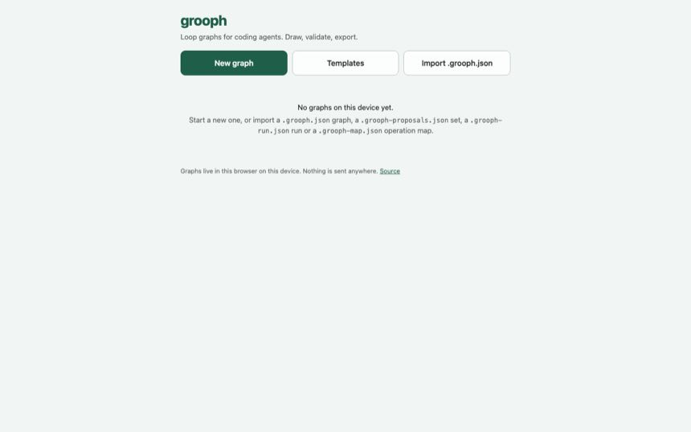
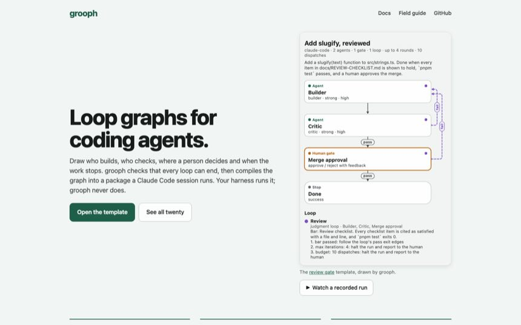
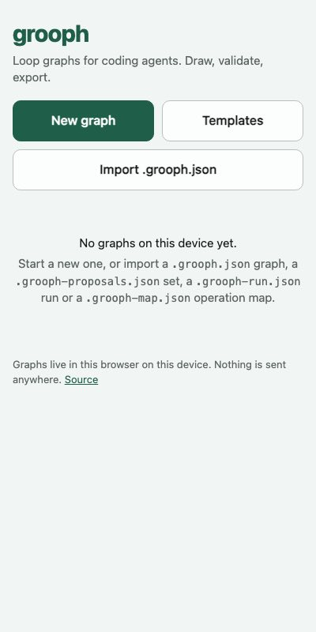

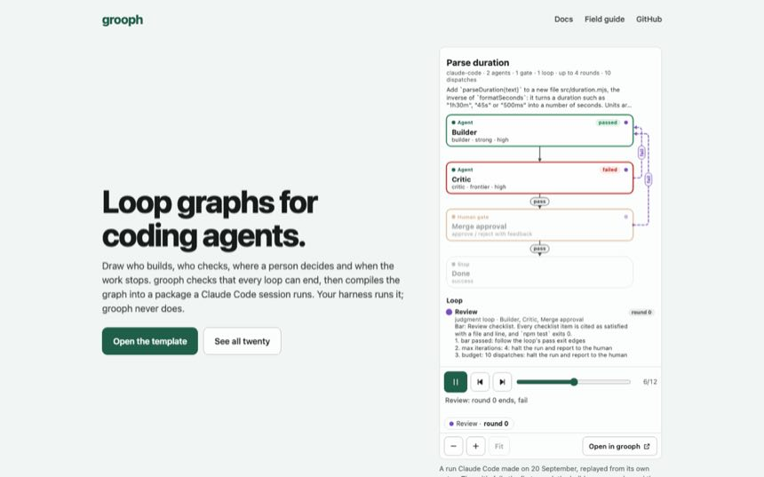
Templates
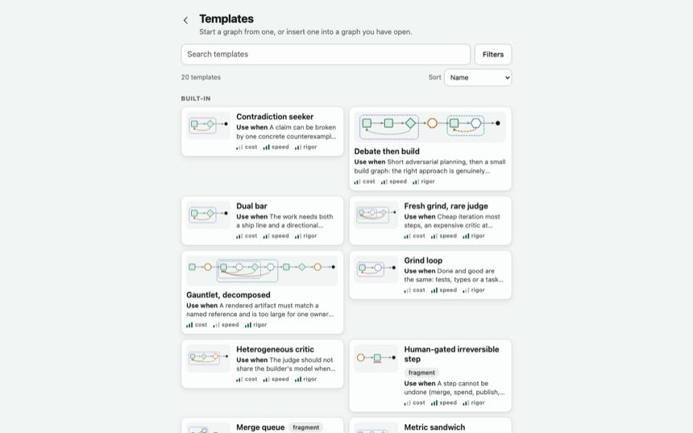
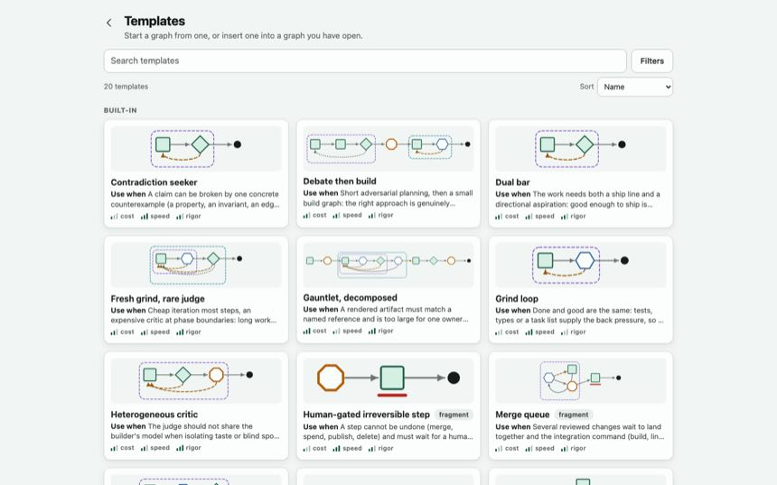
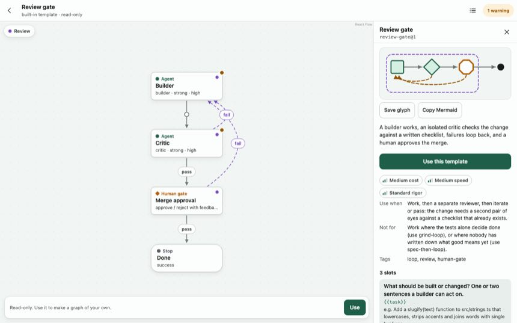
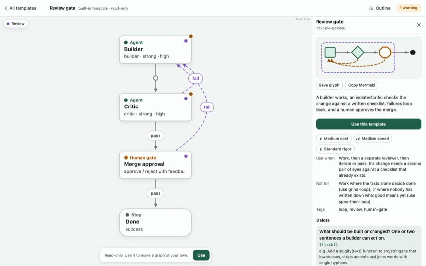
The operation map
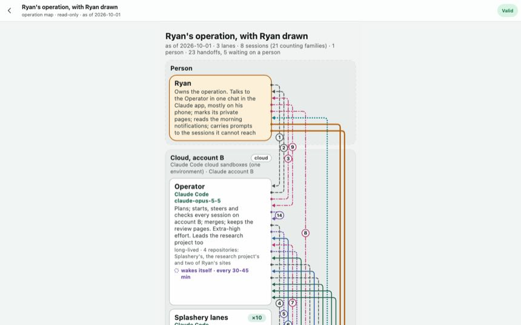
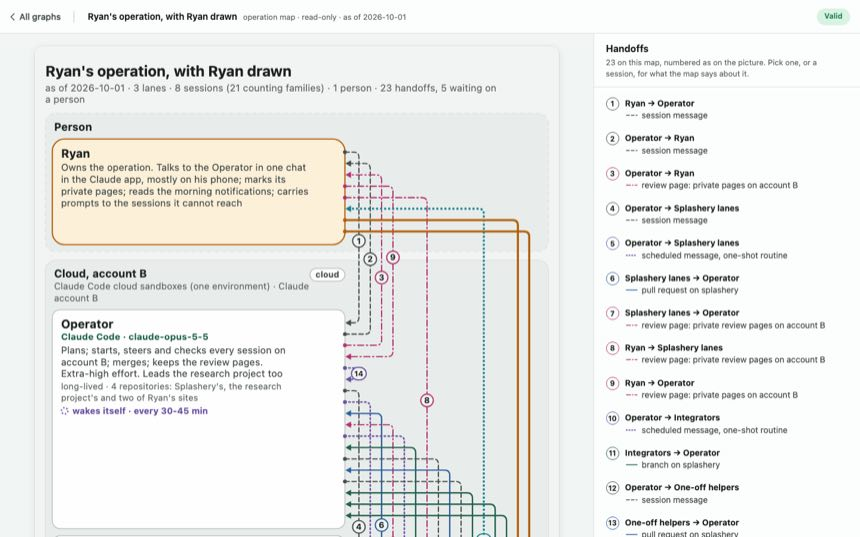
Sessions, live
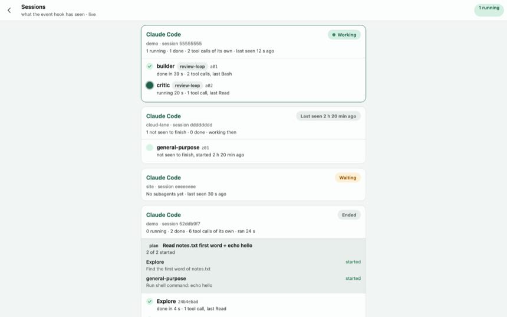
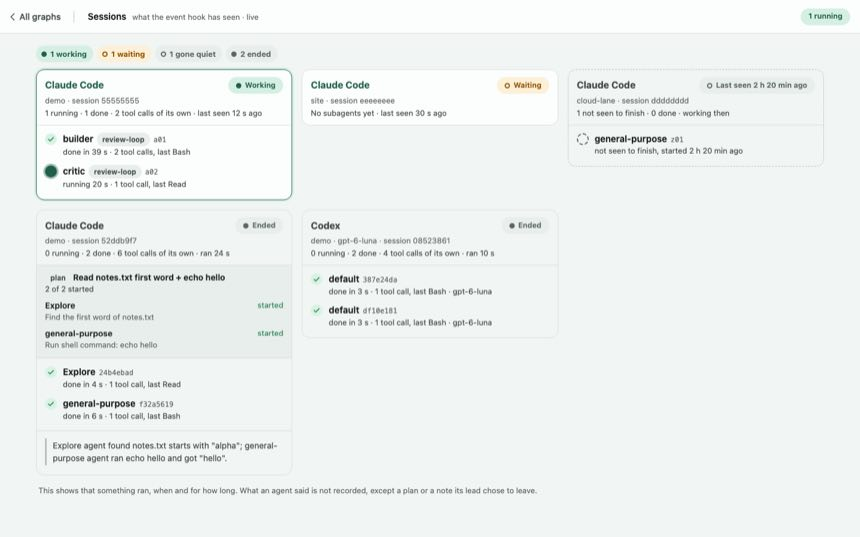
A run
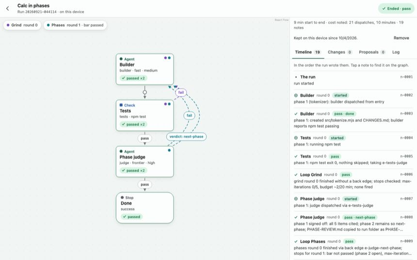
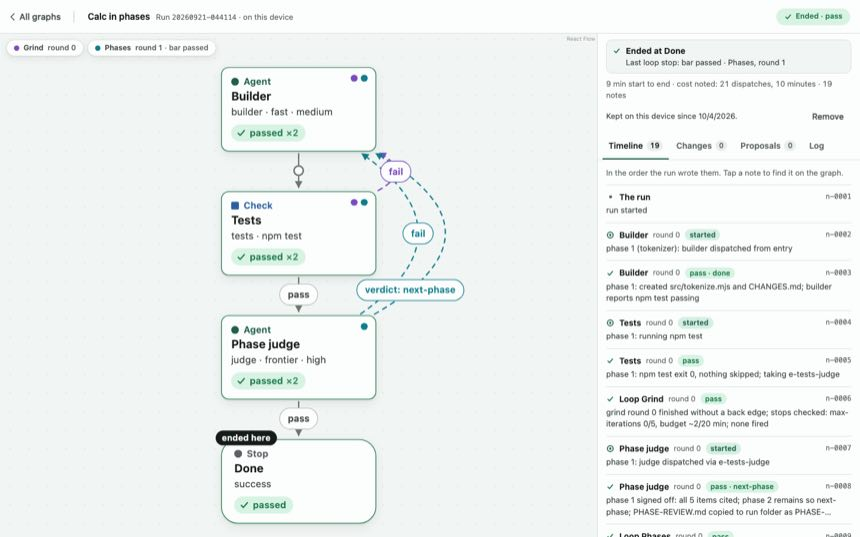
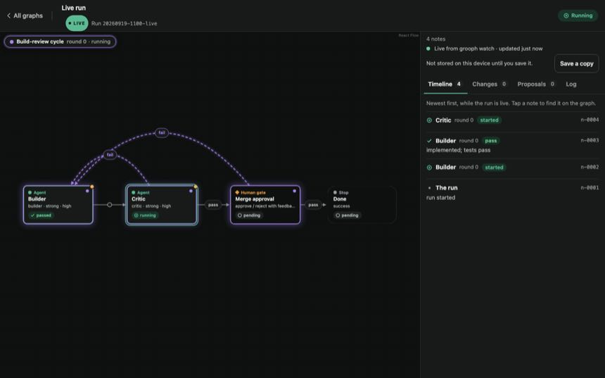
New: the documents as pages, the field guide, community, embeds
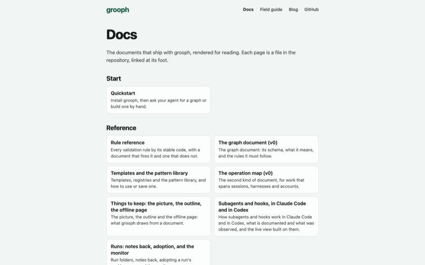
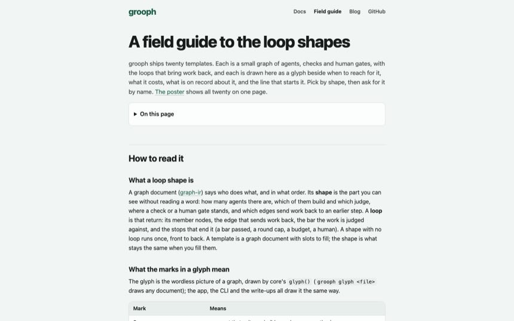
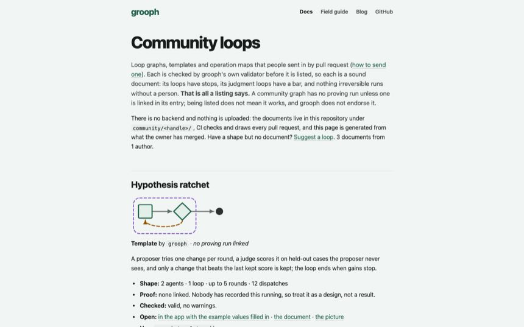
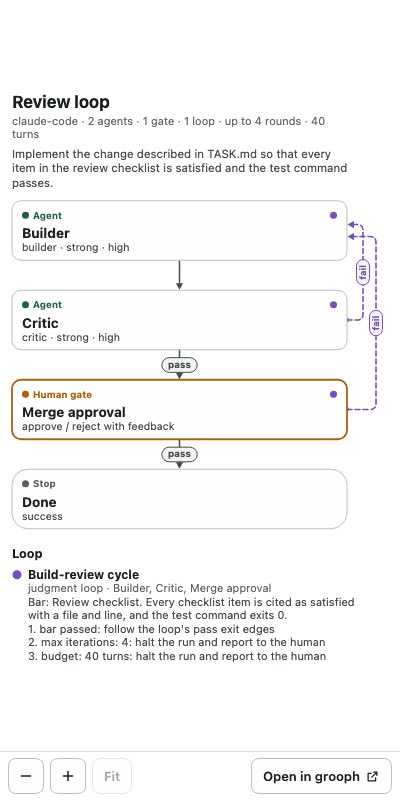
grooph embed.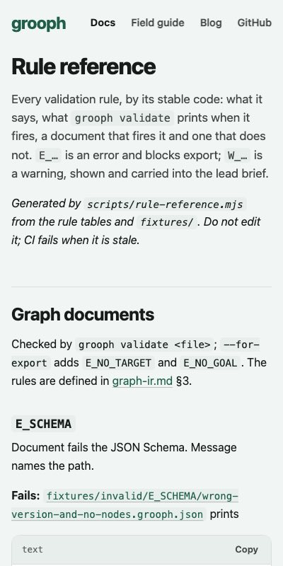
Speed
Sizes are what GitHub Pages sends, gzipped. Times are the browser's own first paint of content, the middle of seven cold visits, on Chrome's throttled links.
| On main | Built | |
|---|---|---|
| The front page's first load | 267.9 KB | 172.4 KB |
| Front page painted, slow 4G | 2,032 ms | 1,584 ms |
| Front page painted, fast 4G | 512 ms | 436 ms |
| A template's address, first load | 267.9 KB | 270.0 KB |
| A template's address painted, slow 4G | 2,056 ms | 2,064 ms |
| A template's address painted, fast 4G | 528 ms | 504 ms |
| An embed's first load | (none) | 125.1 KB |
| The CLI's cold start | 92 ms | 90 ms |
How: an address now loads only what it shows. The front page no longer fetches the editor's canvas library. The compiler is fetched when someone exports. CI fails any change that goes over the budget, so this cannot drift without someone deciding it should. Decision 0021 has the details.
What is in #36
| Slice | What | Built by |
|---|---|---|
| 0055 | The front page, link previews, the README | Opus lane (#34) |
| 0056 | Embeds and the replay; grooph embed | Opus lane (#35) |
| 0057 | Did-you-mean, short help, grooph explain, quickstart, rule reference | Sonnet lane (#33) |
| 0058 | The performance budget in CI | this session |
| 0059 | The field guide and its poster | Sonnet subagent |
| 0060 | The documents as pages | Sonnet subagent |
| 0061 | The editor and viewer on a desktop | Opus subagent |
| 0062 | The map, live and run screens | Opus subagent |
| 0064 | The blog draft and the technical report | this session |
| 0065 | Community submissions | Sonnet subagent |
| 0068 | The front page plays a recorded run | this session |
| 0069 | The front page loads without the canvas | this session, with an independent read |
| 0070 | The compiler loads on export | this session |
| 0063, 0066, 0067 | Three small fixes to the toolkit and the embed command | this session |
Each slice has a branch and a handback under handoffs/. 85 commits, 344 files, before this page and its pictures.
What went wrong, and what I did
- I told you all three lanes were green. #35 was not. Its browser-test job fails on its own branch: one of its tests needs a build the job never ran. I had not checked that job. #36 adds the build step.
- My timing script read up to half a second late. It asked the test driver to wait, and the driver looks again at widening intervals. Two things I concluded from it are withdrawn in handback 0069. Every time on this page is from the browser's own clock.
- Two slices met badly. Splitting the bundle changed the order the stylesheets load in, and the live view's grid collapsed to one column. Its own test caught it when I merged them. The order is fixed in the build now.
- A split that changed nothing passed every check. The build quietly skipped its work and the budget script weighed almost nothing. Both now stop with a message.
- One commit swept in the subagents' working copies. The next commit took them out. No history was rewritten.
- One builder force-pushed its own branch, minutes old, that nobody had fetched. Nothing was lost. The handoff protocol now forbids it in so many words.
- A fresh reader found five defects in my front-page change, one of which could have left the offline app without its editor after a cut-short visit. All five are fixed. The serious one has a test that fails without the fix.
Checked, and not checked
- Checked on this Mac: core 344, CLI 118 and web 59 unit tests; 160 browser tests; every step CI runs. I looked at every picture above.
- Not checked: anything on the live site, since nothing deploys until
mainmoves. Safari and Firefox. A real phone on the new screens. GitHub Pages' own speed. - Not explained: in two timing runs, one visit in seven to a template's address painted about 240 ms late.
mainshowed none. - Yours to judge: whether the blog draft sounds like you.
What it used
All local, on this Mac. No cloud session, no Fable, no Codex. Seven subagents overnight: three on Sonnet 5.5 (field guide, docs pages, community), two on Opus 5.5 (the desktop editor; the map, live and run screens), and two independent reads on Opus 5.5. Together they used about 2.9 million tokens as the app counts them. No model was run by command, so the proving and comparison ledgers are unchanged.
How to undo
Nothing is merged. Closing #36 leaves main at 0.2.5. The tag checkpoint/2026-10-04-before-the-push marks main as it was before any of this, and stays after a merge.